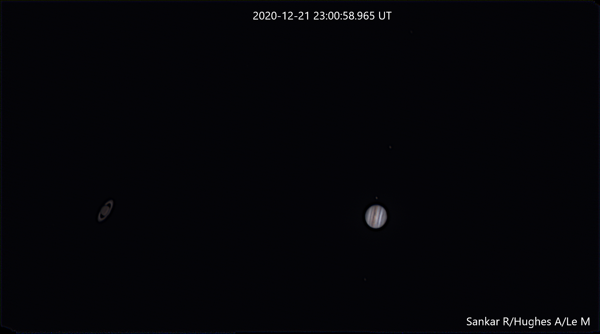
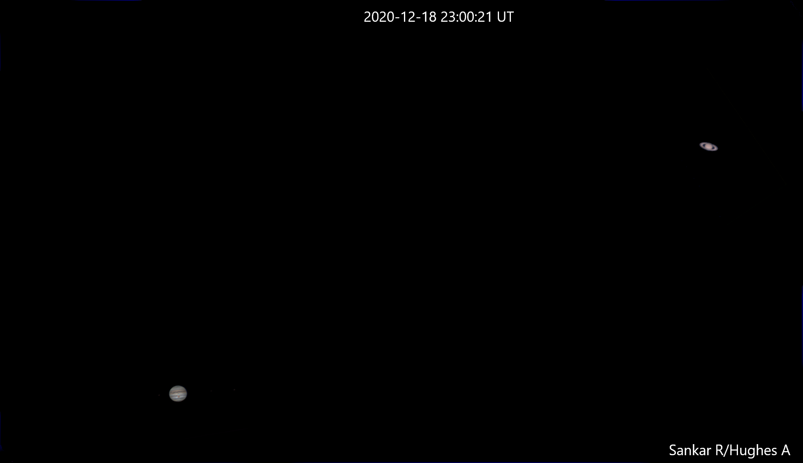
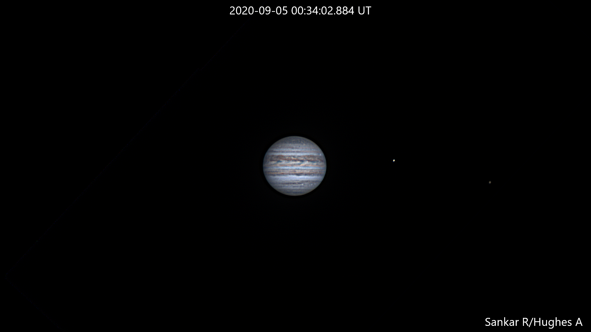
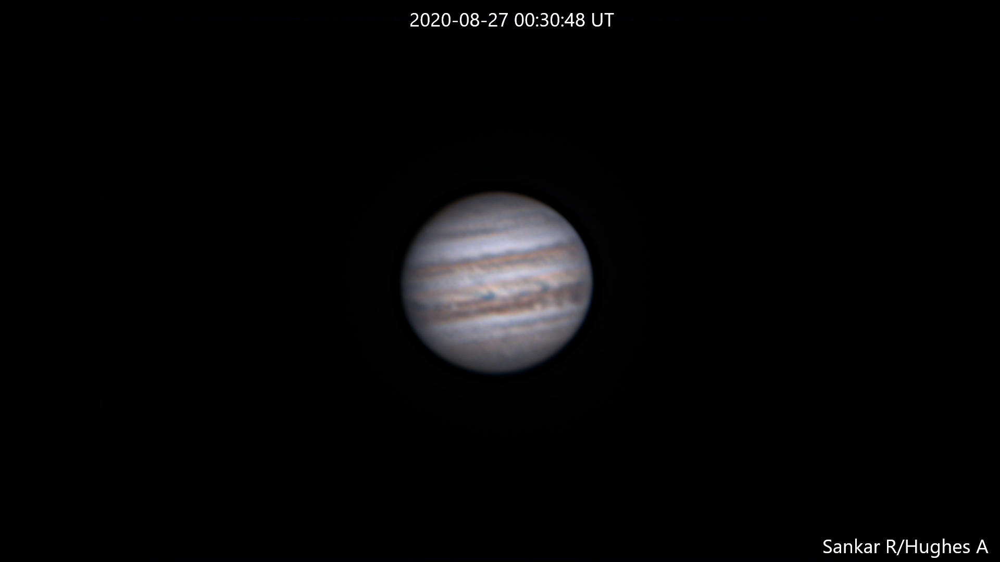
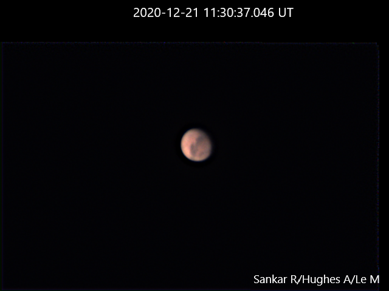

Taken on the closest approach of the Jupiter/Saturn conjunction in 2020. This was processed directly using a 3000 frame video with an exposure of 0.8ms, and stacking the best 1350 frames. Wavelet processing done using Registax. Titan is barely visible to the lower left of Saturn. Jupiter's moons are Europa, Ganymede, Io and Callisto from bottom to top.
18th Dec 2021 - Jupiter/Saturn conjunction

Test run before the Jupiter/Saturn conjunction. This is a mosaic of two separate images of Jupiter/Saturn and realigned onto a wide-field image. Angular distance is correct, but brightness is not. Jupiter was processed using 1350/3000 frames at 2.8ms exposure each, and Saturn was processed using 1200/3000 frames at 7.7ms exposure. Wavelet post-processing done in Registax. The Great Red Spot is visible, and Jupiter's moons are Io, Europa and Ganymede from left to right.
4th September 2020 - NTB outbreak

Attempt to catch the North Temparate Belt (NTB) outbreak in Sep/Oct 2020. Used 800/2000 frames at 18ms exposure and post-processed in Registax. The outbreak is visible near the eastern limb. Europa and Callisto are visible on the right.
26th August 2020

Test using the lucky-imaging method to capture Jupiter near opposition. This image is from the 32-in Ortega telescope at Flrida Tech. This image is stacked from 400/1000 frames at 10ms exposure.
Mars
21st December 2020

Mars taken using a 2x Barlow lens on an 8-in telescope. This image is from the best 600 out of 3000 frames at 1.4ms exposure. North is the bottom right and Elysium Planitia is visible.
Moon
21st December 2020
Moon taken using best 65 out of 100 frames at 1.5ms exposure.